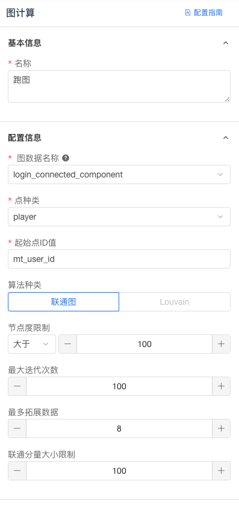

|
基本信息
- 名称：用户可自定义该组件名称
配置信息
-
图数据库名称：
- 通常会填写画布中图数据库组件中命名的：图数据名称
- 问号鼠标hover提示信息：“可以选择已经构建的图数据库名称”
- 支持模糊搜索下拉框，单选。可填写已有图数据库名称，下拉展示已经创建的图数据库，按照时间倒序展示默认展示近10条。
-
点种类：与图数据库信息联动
- 用户没有填写图数据库名称，则无筛选项
- 用户填写了图数据库名称，则下拉框内可选图数据库中声明的点类型信息，需要去重展示
- 单选
- 起始点ID值：文本输入框。若用户选择了点种类，自动填充ID值表达式。未选择时提示信息“请输入走图数据库中的起始点ID”
- 算法种类：支持用户选择连通分量
和Louvain两种模式
-
当选择为连通分量时：
-
节点度限制：逻辑操作符号+数值
- 逻辑操作符号：包含大于、大于等于、小于、小于等于
- 数值：文本输入框，默认为空，空值时提示文案“请输入数字”
- 支持用户添加一个逻辑，及可组成区间，最多只能添加一个，需要校验是否配置错误，本质上是X>10 && X< 30 的配置实现逻辑
最大迭代次数：默认数值为100，用户清除默认值后，空白提示“请输入正整数”
- 最多扩展数据：默认数值为8，用户清除默认值后，空白提示“请输入正整数”
- 连通分量大小限制：默认数值为100，用户清除默认值后，空白提示“请输入正整数”
|

|